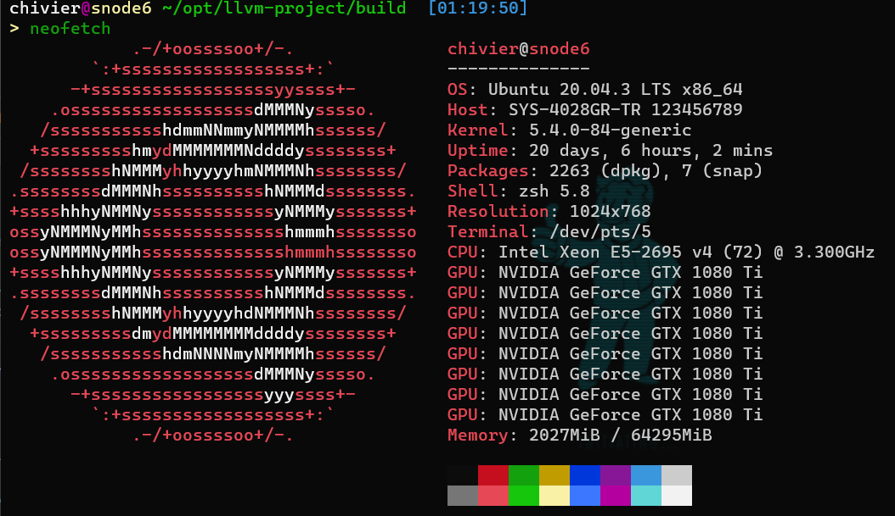
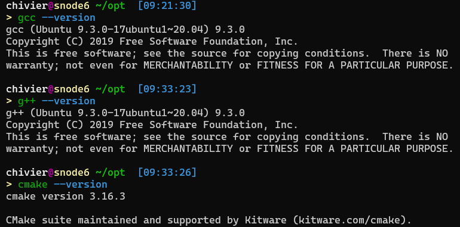
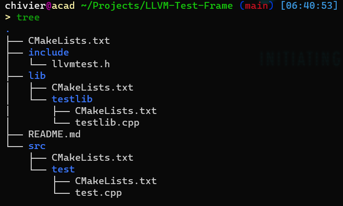

前言
这里首先先说明我整理次文档的目的，LLVM是我日常工作学习中最常用的工具，小到用C++写一个demo，大到做自带代码优化和代码分析，可以说我的日常工作学习离不开LLVM的Toolchains，在这里，我将自己对LLVM的见解和认识在这里做一个系统的整理和介绍。
这里我基于 LLVM 12 版本进行介绍，参考了一些 LLVM 的相关总结资料和书籍，结合官方文档，进行如下总结。
使用系统环境
  ## 编译 LLVM 项目简单来说步骤如下：
1 | git clone https://github.com/llvm/llvm-project.git |
对于cmake项目的一般编译方法如此，这里需要对一些选项补充说明：
- LLVM_TARGETS_TO_BUILD： LLVM的目标平台，例如：
AArch64,AMDGPU,ARM,BPF,Hexagon,Lanai,Mips,MSP430,NVPTX,PowerPC,RISCV,Sparc,SystemZ,WebAssembly,X86。默认和目前所在机器一致。 - LLVM_ENABLE_PROJECTS： LLVM可以包含的组件，一般编译只加上clang，所有的组件为：
clang,clang-tools-extra,compiler-rt,debuginfo-tests,lib,libclc,libcxx,libcxxabi,libunwind,lld,lldb,llgo,mlir,openmp,parallel-libs,polly,pstl。 - LLVM_ENABLE_ASSERTIONS： Assertion check，非必要，但是可以加上。
- LLVM_ENABLE_THREADS: 线程库，例如Pthreads，一般会考虑加上。
- LLVM_ENABLE_WARNINGS: 如果可能，编译LLVM不应生成警告消息。因此，默认情况下会打开打印警告消息的选项。要将其关闭，必须指定–DLLVM_ENABLE_WARNINGS=off。
- LLVM_OPTIMIZED_TABLEGEN: 通常，tablegen 工具使用与 LLVM 其他部分相同的选项构建。 同时使用tablegen生成大部分代码生成器。 因此，tablegen 在调试版本中要慢得多，从而显着增加了编译时间。 如果此选项设置为 ON，则在启用优化的情况下编译 tablegen，即使对于调试版本，也可能减少编译时间。 默认为关闭。 要启用此功能，您必须指定 –DLLVM_OPTIMIZED_TABLEGEN=ON。
上述选项可以自行根据需求安装，更详细的编译选项说明见官方文档：
LLVM 代码结构
在 llvm-project 目录里，有诸多子目录，这些子目录包括了项目的各个内容组件，下面将概括性介绍这些组件的内容：
llvm
llvm 目录存放 LLVM 项目的核心内容，即编译器后端工具。
重要组件有：
- llc: 静态编译器，llc 将 LLVMIR 文件作读入，输出 bitcode，特定架构汇编，或者直接输出二进制文件。
- llvm-objdump, llvm-dwarfdump: 用于检查生成的对象文件，反编译工具。
- llvm-ar：用于从 obj 文件整理生成归档文件。
- llvm-mc：这里需要额外强调，此工具我个人使用也并不是很多，但是将来会大有用途。该工具可以是一个机器码试验场，可以方便的编译和反汇编机器码并进行微调，在新增指令时非常有用。
polly
数学优化方法，位于 Polly 目录中的 Polly 项目向 LLVM 添加了另一组优化。它基于一种称为多面体模型的数学表示法。使用这种方法，可以进行复杂的优化，例如针对缓存位置优化的循环。如果有时间可以稍微阅读了解一下。
mlir
MLIR 项目旨在为 LLVM 提供多级中间表示。LLVM IR 已经处于较低级别，并且源语言的某些信息在编译器中生成IR期间丢失。所以 LLVM IR 并不能作为独立的编程语言使用（虽然理论上可行，但是写起来和写汇编一样麻烦），IR 的作用是面向未来，适应多种架构的后端。对于新的架构或者硬件设备，从 IR 到机器码或者二进制文件的成本是非常低廉的。
clang
clnag编译器也是llvm项目的一个重要组成部分，代码位于clang目录中。它提供了一套用于词法分析、语法分析、语义分析和从C、C++、Objtovi-C和Objul-C++源文件生成LLVM IR的库。
libclang 和相关组件基本位于 clang 中，其余一些额外的组件位于 clang-tools-extra 中。例如其中的 clang-tidy 是一个轻量级的代码整理工具。
lld
lld目录主要提供连接器。编译器创建的目标文件必须与运行时库链接在一起以形成可执行文件。链接器支持 ELF、COFF、Mach-O 和 WebAssembly 格式。
lldb
一个和 gdb 等价的工具。
llvm-runtime
llvm 运行时环境可以由 glibc 提供，也可以用自己的组件：
- compiler-rt 项目提供独立于编程语言的支持库。 它包括通用功能，例如 32 位 i386 的 64 位除法、各种santinizer、fuzzing 库和 profiling 库
- libunwind 提供非绑定DWARF标准数据，用于debug
- libcxxabi 提供 C++ 异常处理
- libcxx C++标准库
- libc C标准库
- libclc OpenCL的运行时
小结
一己之见，LLVM之所以能够得到工业界的广泛认可和推崇，一个重要的理由就是LLVM设计的普适性。举个例子，在我们自己定制前端或者对 C/C++ 做一些语言拓展的时候，我们可以复用 LLVM 的代码，而绝对不会有人使用 GNU 的代码，尽管 GNU 编译器是认可度最高，最可信的编译器设计。
使用 LLVM 相关库代码
既然上一小节最后提到了 LLVM 的复用问题，这里可以使用 LLVM 做一个小小的测试作为第一个 LLVM 项目的用例。
这里举例，用一个完整的 cmake 项目说明 LLVM 整体的使用方法。
一般的项目展开，会有include放置头文件，src放置源代码和框架，lib放置我们设计的动态和静态的库。
目录树结构如下：

项目地址是：
https://github.com/Chivier/llvm-test-frame
此处cmake可以直接抄走复用。个人认为之后对于DSL的开发不会脱离此模板。